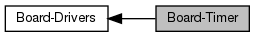

|
OSG
0.1.0
|
|  |
Functions | |
| void | osg_board_Timer_ctor (osg_Timer *self, const osg_TimerType type, osg_TimerCallback callback, void *argument) |
| Constructor for timer. More... | |
| void | osg_board_Timer_dtor (osg_Timer *self) |
| Destructor. More... | |
| osg_TimerType | osg_board_Timer_getType (osg_Timer *self) |
| Returns the timer type. More... | |
| Bool | osg_board_Timer_isRunning (osg_Timer *self) |
| Check if a timer is running. More... | |
| Bool | osg_board_Timer_start (osg_Timer *self, const uint32_t millis) |
| Start the timer. More... | |
| Bool | osg_board_Timer_stop (osg_Timer *self) |
| Stop the timer. More... | |
Board methods for Timer
| void osg_board_Timer_ctor | ( | osg_Timer * | self, |
| const osg_TimerType | type, | ||
| osg_TimerCallback | callback, | ||
| void * | argument | ||
| ) |
Constructor for timer.
| self | The timer object. |
| type | The timer type: one shot or periodic. |
| callback | The callback to call. |
| argument | Argument passed to callback function. |
| void osg_board_Timer_dtor | ( | osg_Timer * | self | ) |
Destructor.
| self | The timer object. |
| osg_TimerType osg_board_Timer_getType | ( | osg_Timer * | self | ) |
Returns the timer type.
| self | The timer. |
Check if a timer is running.
| self | The timer object. |
Start the timer.
| self | The timer object. |
| millis | Value of the timer in milliseconds. |
1.8.13